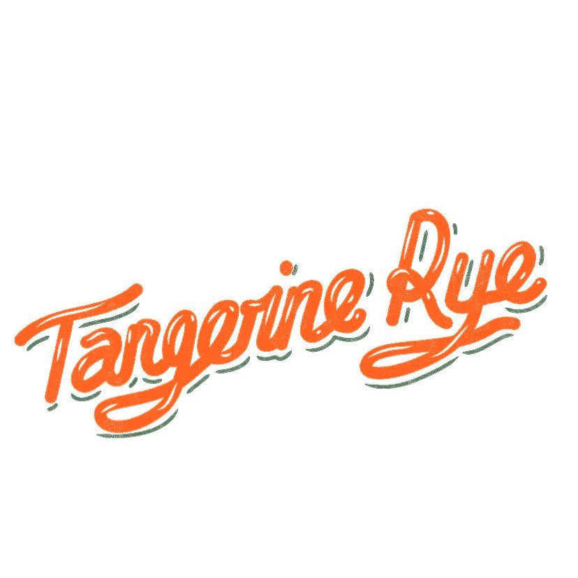
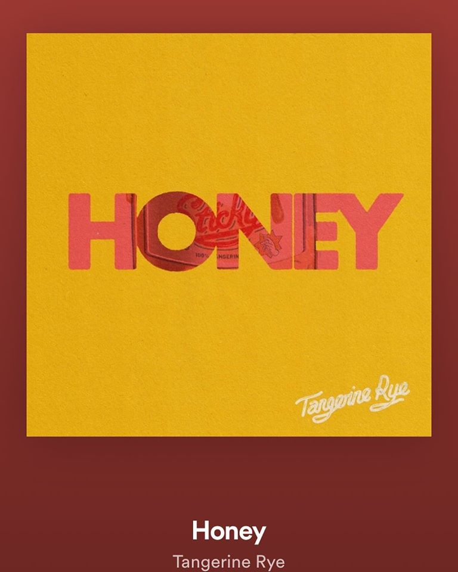
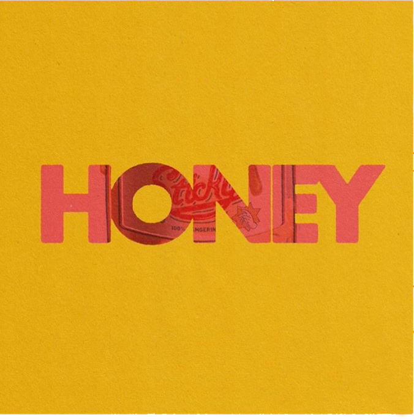
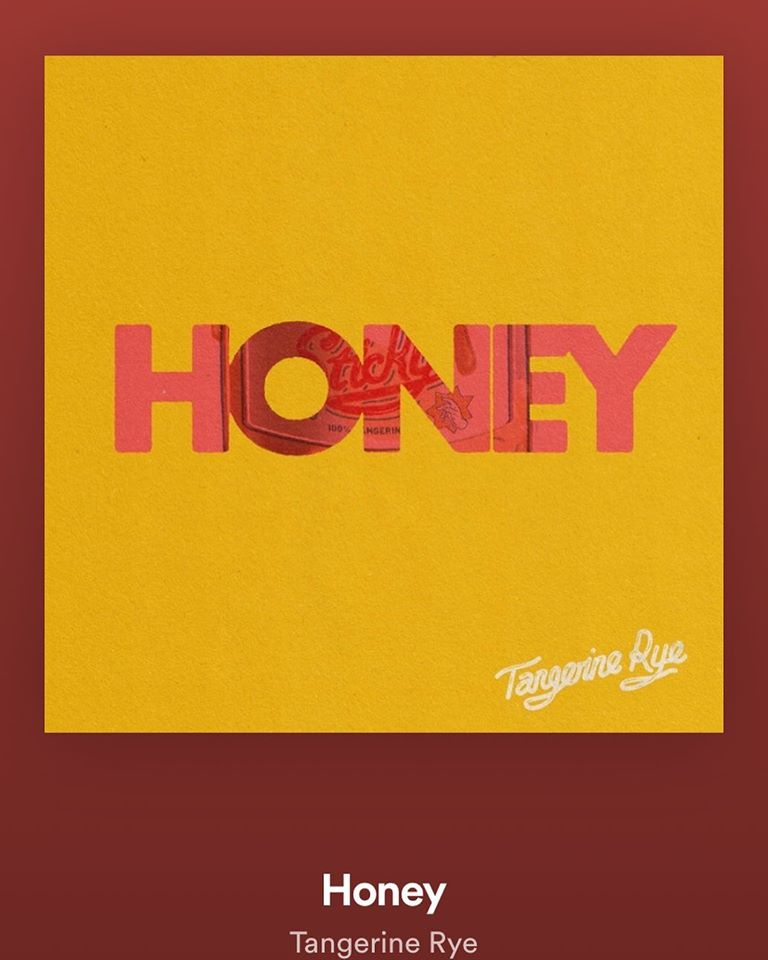
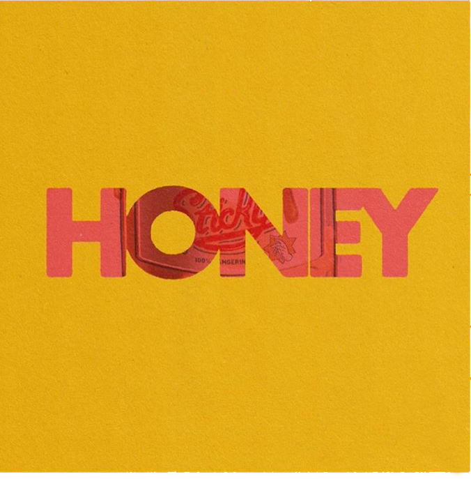
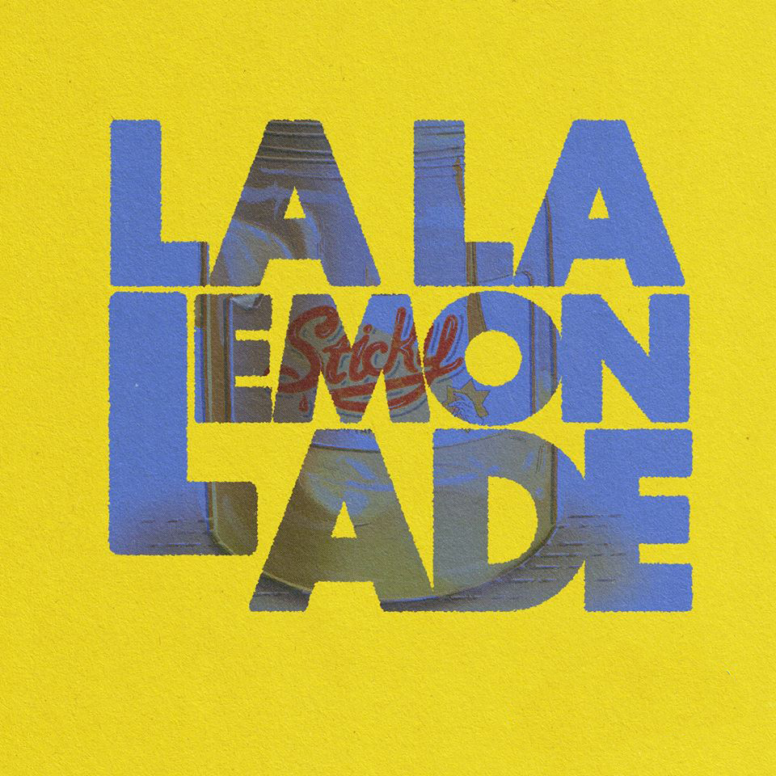
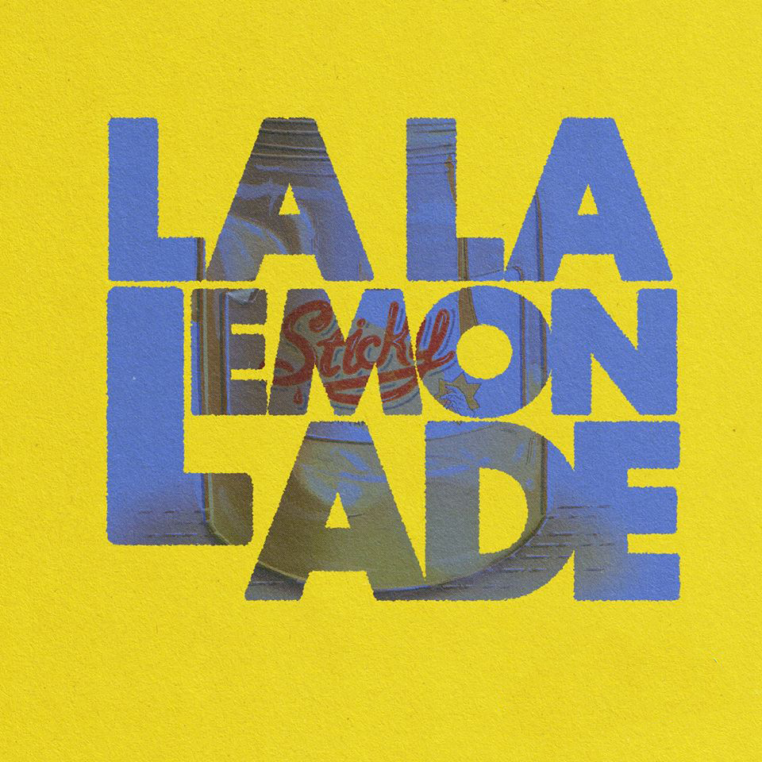
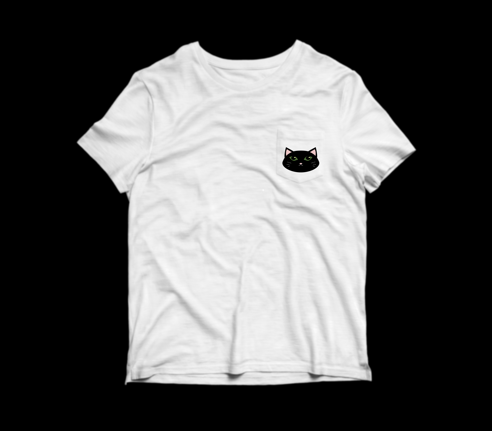

We generated HTML with React. We chose React as we wanted to learn the industry standard.
We generated CSS with React, and made CSS modules stylesheet for each page. We also designed responsive pages that resize on smaller screens. The gradient animated background was also made with CSS. We also investigated several issues with CSS and React:
- Font-awesome and material-ui icons behaved differently for style tags, solution was to make different functions that styled font-awesome icons with a div tag.
We have investigated eventListeners, eventHandlers, and browser routers with client-side JS framework, React. We also created animation with CSS.
All images in the assets folder were taken from
the Tangerine Rye facebook page. Images had to be
manually edited using Photoshop to create transparent
backgrounds.
BEFORE

 AFTER
Album covers were also edited by cloning
the background pattern and stamping to remove the
Tangerine Rye logo.
BEFORE


AFTER
AFTER
Album covers were also edited by cloning
the background pattern and stamping to remove the
Tangerine Rye logo.
BEFORE


AFTER
BEFORE
 
AFTER

AFTER
All icons taken from font-awesome and material-ui were SVG. As all the band logos were professionally made, there was no real use for homemade SVG designs. For the purpose of this assignment, we created a cat SVG logo with Inkscape (because one of the contributors has 5 cats at home and is obsessed with cats!) and pasted it onto a t-shirt and a cap as fake merchandise.
The original cat logo and its merchandise:


The cat logo was created using a combination of freehand drawings (to draw the whiskers), path transformations (cylinders into cat eyes; triangles to curve creating cat ears), as well as grouping and duplicating objects to flip horizontally to create a symmetrical logo (this was done by dragging a guideline down the center to only create half the image first before duplicating object to create mirror image). Photoshop was used to paste logo onto t-shirt and cap mockups (PNG).
We have self-issued our own self-signed SSL certificate and keys, but as we have not gotten a domain name, we could not get a valid authorised certificate. We also have handled port numbers and integrating with client with an /api route to handle get/post requests. We also handled URL parameter validation in /api/products/:productId by checking that productId is always an integer through regex. The server also handles 404 and 500 errors.
We have managed to insert data and extract it in localhost:3001/api/subs, by using async/await style. We have designed a database schema to store email subscriptions, products (name, description, pictures, price) and customers (address, name, ordered products). To our knowledge, this schema is normalised up to BCNF.
We have not created dynamic pages.